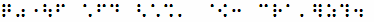
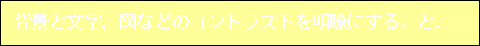
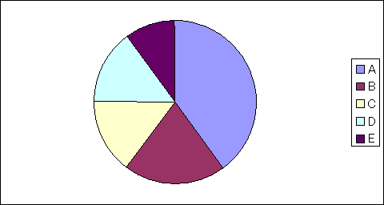
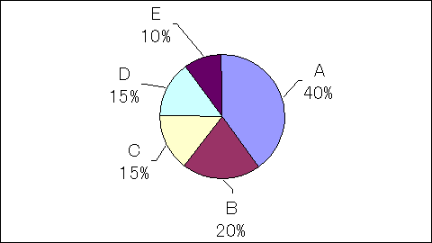
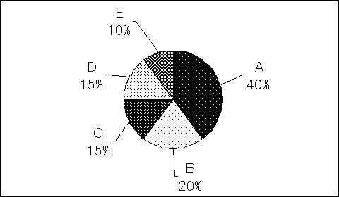

論文作成・発表アクセシビリティガイドライン（Ver.4.0）
目次
- 論文作成・発表アクセシビリティガイドライン
- 論文作成・発表アクセシビリティガイドライン チェックリスト
- 学会・研究会等における情報保障マニュアル
- 学会・研究会等会場へのアクセス配慮チェックリスト
- 情報保障マニュアル添付資料1（手話通訳・要約筆記依頼先）
- 情報保障マニュアル添付資料2（手話通訳費用の例）
- 情報保障マニュアル添付資料3（点訳依頼手配先リスト）
- 情報保障マニュアル添付資料4（新しい技術による情報保障）
論文作成・発表アクセシビリティガイドラインについて
近年の電子情報技術の進展は目覚しく，今日の我々の生活にとって必要不可欠であるだけでなく，障害のある人にとっても大きな福音となり，ADL（Activities of Daily Living：日常生活活動），QOL（Quality Of Life：生活の質）の向上に大いに役立っています．それに伴い，福祉情報機器関連の研究開発が盛んになり，電子情報通信学会，ヒューマンインタフェース学会ほか多くの学会，研究会はその研究開発，発表，普及の場として活発な活動を続けております．ここで，真に役に立つ機器，システムの研究開発には，当事者ユーザーである障害のある人の研究開発への参加が不可欠です．しかし障害のある人の学会や研究会への参加は非常に少ないのが現状です．その要因のひとつに，学会や研究会での情報保障が充分でないことがあると思われます．参加したくても，手話通訳がない，発表のスライド等の文字が小さすぎて見えない，資料が点字化されていない，などのバリアがあります．
電子情報通信学会ヒューマンコミュニケーショングループ（HCG）は上記の課題を認識し，HCGに所属する福祉情報工学研究会（Welfare Information Technology： WIT）を中心として各種の情報保障の試行を行なうこととしました．試行に当たってはHCG所属の4研究会からのメンバーによる「情報保障WG（英文名称Academic Meeting Accessibility Initiative： AMAI）」を設立いたしました．
情報保障WGでは，WITの研究会，WITが参加するHCGシンポジウム，情報科学技術フォーラム（FIT）等で，「従来の情報保障方式の洗い出し，それらを導入した場合の経費の試算，および期待される効果の検証」および「新しい情報補償システム開発の可能性の調査」を行ない，併せて，論文作成，プレゼンテーション資料作成，および発表時の情報保障に関するアクセシビリティガイドライン作成も行ないました．
本書は，そのガイドラインのWIT研究会等での試行結果を踏まえ，第1版として公開するものです．本書は，まず，“守りやすい”ガイドラインであることを目的とし，基本的な，必要最小限のガイドラインを示すにとどめています．また，内容は主として聴覚障害，視覚障害のある方への情報保障が中心となっており，手話通訳，要約筆記，点字化，音声化などを行なうことを前提としています．
今後，多くの研究会でお使いいただき，忌憚ないご意見，コメント，改善案などをお寄せいただき，改良を重ねていくこととしたいと考えております．
なお，情報保障WGは2005年3月をもって終了となりますが，本ガイドラインの改良・維持については，WITで担当してまいります．
電子情報通信学会ヒューマンコミュニケーショングループ情報保障WG
リーダー 岡本 明
電子情報通信学会福祉情報工学研究会（WIT）委員長
Ver.2.0について
Ver.2.0は，前バージョンの公開後いくつかの研究会で試行を続けていただき，アンケート，手話通訳の方のコメントや障害のある方のご意見等をもとに，いくつかの改訂を行ない，改めて公開するものです．また，このガイドラインに沿った論文作成・発表になっているかどうかを自己チェックするための，簡単なチェックリストも別紙として用意しました．
本ガイドラインは今後多くの学会・研究会でご利用いただき，さらに改訂を続けていく必要があります．ぜひご意見，コメント等を下記までお寄せください．
電子情報通信学会ヒューマンコミュニケーショングループ情報保障WG
リーダー 岡本 明
電子情報通信学会福祉情報工学研究会（WIT）委員長 長嶋祐二
Ver.3.0について
Ver.2.0にはなかった項目ですが，学会・研究会等の会場へのアクセスに対して配慮することも主催者側としては大切なことです．例えば，会場に行くまでの間に階段が存在して，車いす利用者が会議や研究会に参加できないといったケースは避けなければなりません．Ver.3.0では学会・研究会等会場へのアクセスを自己チェックするための，簡単なチェックリスト「学会・研究会等の会場へのアクセスチェックリスト
Ver.1.0」を用意しました。
本チェックリストを今後多くの学会・研究会でご利用いただき，さらに改訂を続けていく必要があります．ぜひご意見，コメント等を下記までお寄せください．
電子情報通信学会ヒューマンコミュニケーショングループ情報保障WG
リーダー 岡本 明
電子情報通信学会福祉情報工学研究会（WIT）委員長 中山 剛
Ver.4.0について
Ver.2.0にはなかった項目ですが，学会・研究会等の会場へのアクセスに対して配慮することも主催者側としては大切なことです．例えば，会場に行くまでの間に階段が存在して，車いす利用者が会議や研究会に参加できないといったケースは避けなければなりません．Ver.3.0では学会・研究会等会場へのアクセスを自己チェックするための，簡単なチェックリスト「学会・研究会等の会場へのアクセスチェックリスト
Ver.1.0」を用意しました。
本チェックリストを今後多くの学会・研究会でご利用いただき，さらに改訂を続けていく必要があります．ぜひご意見，コメント等を下記までお寄せください．
発表ガイドライン改訂WG（仮）リーダー 布川 清彦
発表ガイドライン改訂WG（仮）委員 塩野目剛亮，若月大輔
電子情報通信学会福祉情報工学研究会（WIT）委員長 酒向慎司
論文作成・発表アクセシビリティガイドラインの概要
本ガイドラインは，Ⅰ．論文作成ガイドライン，Ⅱ．電子プレゼンテーションファイル・スライド・OHP等の作成アクセシビリティガイドライン，Ⅲ．発表時アクセシビリティガイドラインからなっています．
Ⅰ．論文作成ガイドラインは，論文が点字化，音声化されたときに生ずる問題点や弱視，色覚障害のある人への配慮を中心に，主として次のようなことが書かれています．
- 点字化，音声化されると，すべて「仮名表記」と同じになるので，同音異義語の判別が難しくなること，固有名詞は誤った読み上げ・点字になる可能性があることに留意する．
- 記号等で点字になると表記が変わってしまうものがあることに留意する．
- 体裁を整えるために単語内にスペースを入れることは避ける．
- 図は読み上げられないことに留意する．
- 表は，読み上げ，点字とも分かりにくくなることに留意する．
- 背景と文字，図などのコントラストを明瞭にする．
- 情報は色だけに依存して表現しない．
Ⅱ．電子プレゼンテーションファイル・スライド・OHP等の作成アクセシビリティガイドラインは，視覚障害のある方が会場でプレゼンテーション画面を理解できるようにすることを中心に，主として次のようなことが書かれています．
- 文字や図面，写真などはできるだけ大きなもの（通常30ポイント以上，最低でも24ポイント以上）をつかう．
- 書体はゴシック系が望ましい．
- 背景と文字，図などのコントラストを明瞭にする．
- 情報は色だけに依存して表現しない．
Ⅲ．発表時アクセシビリティガイドラインは，会場で視覚障害のある方がプレゼンテーション内容を理解できるようにすること，手話通訳や要約筆記がやりやすいようにすることを中心に，主として次のようなことが書かれています．
- 指示代名詞や「ここに示すように，」などの言葉は避ける．
- 図・写真・表は，見えなくても図表の概要が理解できるように説明する．
- 言葉をはっきりと，文を区切って比較的ゆっくりと，明瞭に話す．
- あいまいな表現やぼかした表現は避ける．
また，会場からの質問の際などに，質問者や座長などに配慮していただきたいことも述べられています．
別紙チェックリストは，このガイドラインに沿った論文作成・発表になっているかどうかを自己チェックするツールとしてご活用ください．
文中，［B］，［L.V］等は次のことを意味します．
［B］：全盲（Blind）の人への配慮
［L.V］：弱視（Low Vision）の人への配慮
［C］：色覚障害（Color vision deficiency）のある人への配慮
［D］：完全失聴（Deaf）の人への配慮
［H］：難聴（Hard of Hearing）の人への配慮
［G］：一般的に読みやすい論文のための配慮(General)
重要度の高い項目には，［重要］と記してあります．
1. Ⅰ. 論文作成アクセシビリティガイドライン
-
文章は点字化，音声化すると，すべて「かな表記」になってしまい，漢字表記はなくなります（漢字点字も考案されていますが，あまり普及していません）ので，同音異義語の判別が難しくなることがあります．どうしても間違っては困る場合には，別の言葉を使うか，分かるような文章にする，などの工夫をしてください．［B］
点字は6つの点でかな一文字を表す仕組みになっています．すべての文章はかな文字に直して点字化されます（かな文字への直し方も，助詞の「は」は「わ」，「へ」は「え」としたり，「う」の列で延ばす単語は長音「ー」を使ったりするなど，独特のルールがあります）．
（例） 点字へ変える規格は今日打ち合わせます． →てんじえ かえる きかくわ きょー うちあわせます．
これは「展示へ変える企画は今日打ち合わせます．」とも読めてしまいます． 普通は前後の文脈からどちらの文であるかはほぼ分かります．しかし，どうしても間違っては困る場合には， たとえば，「点字へ変えるスタンダードは今日打ち合わせます．」 などに変えるのも対策の一つとなります．
-
固有名詞などはどのように読み上げられるか，どう点字化されるかは音声化辞書，点訳辞書によって異なることがあります．また，送り仮名を入れないと，予期したように読まれない場合があります．どうしても間違っては困る場合には，読みをつけるなどの工夫をしてください．［B］
（例） 辞書をカスタマイズしていない音声読み上げソフトや点字化ソフトでは，次のようになってしまうことがあります．
春日局 → 音声「カスガノツボネ」，点字「シュンジツキョク」
春日一郎 → 音声「ハルヒイチロウ」，点字「シュンジツ イチロー」
（例） 「行った」は，「おこなった」と「いった」という二通りの読みが考えられますが，「おこなった」と読ませたいときには，送り仮名を入れて「行なった」としないと，「いった」になってしまうことがあります．
「試合を行った」 →音声「しあいをいった」，点字「シアイヲ イッタ」 -
特殊文字や機種依存文字は点字化すると表記が変わってしまう場合がありますので，できるだけ一般的な文字を使うようにする必要があります．［B］
ここにすべてのケースを挙げることは難しいのですが，とくに次のものは注意が必要です．
（例） ●，◎，☆，★などは，読み上げはある程度正しく読みますが，点字にはこれらの記号がありませんので，次のように単なる○と×だけの表記になってしまうことがあります．
○ → 音声「まるじるし」，点字「○」
● → 音声「くろまるじるし」，点字「○」
◎ → 音声「にじゅうまる」，点字「○」
☆ → 音声「ほしじるし」，点字「×」
★ → 音声「くろぼし」，点字「×」
したがって，できるだけ上記のような記号ではなく，アルファベットやイロハなどの文字を使っていただくほうが分かりやすくなります．
（例） ①，②，③などは点字にはありませんので，括弧つきの表記に変わってしまいます．
① → 音声「まるいち」，点字「（１）」
② → 音声「まるに」，点字「（２）」
③ → 音声「まるさん」，点字「（３）」
④ → 音声「まるよん」，点字「（４）」
したがって，
（１）実験の概要 ①被験者のプロフィール
のように使われていると，この二つの区別がつかなくなることがあります．
（例） 特殊文字や機種依存文字ではありませんが，:-)，(^^)などの組み合わせ絵文字は，文字通りに読まれ，点字化されてしまいますので，組み合わせた場合の意味が伝わりません． -
体裁を整えるために単語内にスペースを入れると，それはひとつの単語とはみなされないため，読みや点字が変わってしまうことがありますので，できるだけ避けてください．［B］
（例） スペースが入ると，次のようになってしまうことがあります．
実 験 → 音声「ミ ケン」，点字「ジツ ケン」
東 京 → 音声「ヒガシ ケイ」，点字「ヒガシ キョー」 -
図は読み上げられませんので，できるだけ図を見なくても理解できるように，タイトル名を分かりやすくつけ，本文中にも説明を入れるなどの工夫をしてください．［B］［重要］
読み上げ，点字化できるのはテキストのみですので，図の部分には何も表されません．図の適切なタイトルをテキストで書き，そこにどんな図があるかが分かるようにしてください（図のタイトルを図の中に画像として入れ込んでしまうと読み上げ，点字化ができません）． -
表は，読み上げ，点字とも分かりにくくなります．とくに重要な部分は本文中に説明を入れるなどの工夫をしてください．［B］［重要］
（例） 表を合成音声で読み上げるときには，通常は左から右へ，上から下へと読んでいきます．次のような表だと，「トクジョウ ショウチクバイ ニギリ サンゼンゴヒャクエン サンゼンエン ニセンゴヒャクエン ニセンエン チラシ サンゼンエン ・・・・」というように読んでしまい，どこがどこだか良く分かりません．このように小さな表ならそれでも若干は分かりますが，縦横10や20もある表だとまったく混乱してしまいます．正しく読み上げられない表の事例 特上 松 竹 梅 にぎり 3,500円 3,000円 2,500円 2,000円 ちらし 3,000円 2,500円 2,000円 1,500円 これは現状では解決が難しい問題ですので，必要な部分は本文中に表から引用して「表から読むと，にぎりの竹は2,500円で，梅は2,000円ですので，差は500円あります．」のように説明するのも一つの工夫です．
-
背景と文字，図などのコントラストを明瞭にしてください．［L.V］［C］［G］［重要］

（例） 明度の高い白と黄の組み合わせは文字が判別しにくく，ほとんど読めない場合があります．次の図は白と黄色の組み合わせの例です．普通の視力のある人でもよく分かりませんし，白黒印刷になった場合は判別が困難です．（例） 明度の高い白と明度の低い茶との組み合わせにより，明度の差（コントラスト）を確保することができます．次の図は白と茶色の組み合わせの例です．これはよく分かります．
-
情報は色だけに依存して表現しないようにしてください．［L.V］［C］［G］［重要］

色覚障害のある人の場合，色の区別がつかないことがあります．とくに，赤と緑，黄色と青の区別が難しいことがあります．また，高齢の方の場合，白と黄色，青と黒などの組み合わせは判別が難しいことがあります．
（例） グラフなどで，領域を色だけで区別していると一般の参加者にも判別しにくいし，色覚障害のある人には判別できない場合があります．次の図は円グラフの中を色だけで示し，右の方に別にその色に対応するデータ項目が表示されていますが，これだと色がわからないと対応が分かりません．これに対しては，円グラフの内容を理解できるよう引き出し線をつけ領域の違いを表すようにするのも良いでしょう．次の図では円グラフの各領域から引き出し線がついていてそれぞれのデータ項目が示されていますので，色が区別できなくても対応がわかります．
また，モノクロ印刷になる場合や，色覚障害のある人のことを配慮して，分かりやすいハッチングをつけることが望まれます．次の図では斜線，網目，ドットなど何種類かのハッチングで領域を区別し，引き出し線でその対応データ項目を表示しています．
 -
専門語などで略語表示する場合は，初出のときにできるだけフルテキストをつけてください．［D］［G］
たとえば，HMD，CSSのような3文字英略語などは，HMD（Head Mounted Display），CSS（Cascading Style Sheet）のように書いていただくことが望まれます．
2. Ⅱ. 電子プレゼンテーション（Microsoft PowerPointなど）・スライド・OHP等の資料作成アクセシビリティガイドライン
-
文字や図面，写真などはできるだけ大きなものを使用してください．文字サイズは通常30ポイント以上，最低でも24ポイント以上を用いることが望まれます．［L.V］［G］［重要］
会場の広さやプロジェクタの投影サイズにもよりますが，概ね上記を目安とすれば弱視の方のみならず，一般の参加者にも見やすい画面となると思われます．
フォントを大きくすると図や表が1枚の画面に入らなくなってしまうことがありますが，その場合，全体を見渡せるもの（フォントは小さくてもやむを得ません）を1枚はじめに用意し，別の画面で，説明が必要な部分や重要な部分だけ拡大したものを出す，などの工夫をしてください．少なくとも重要部分は口頭で読み上げて説明することが必要です． -
書体はゴシック系が望ましいですが，明朝系の場合は太字とすることが望まれます．［L.V］
明朝系では漢字の横線が細くなりますので，見えにくくなってしまいます． -
背景と文字，図などのコントラストを明瞭にしてください．［L.V］［C］［G］［重要］
たとえば明度の高い白と黄の組み合わせは文字が判別しにくく，ほとんど読めない場合があります．次の図は白と黄色の組み合わせの例です．普通の視力のある人でもよく分かりません．
明度の高い白と明度の低い茶との組み合わせにより，明度の差（コントラスト）を確保することができます．次の図は白と茶色の組み合わせの例です．これはよく分かります．
-
情報は色だけに依存して表現しないようにしてください．［L.V］［C］［G］［重要］
色覚障害のある人の場合，色の区別がつかないことがあります．とくに，赤と緑，黄色と青の区別が難しいことがあります．また，高齢の方の場合，白と黄色，青と黒などの組み合わせは判別が難しいことがあります．
たとえばグラフなどで，領域を色だけで区別していると一般の参加者にも判別しにくいし，色覚障害のある人には判別できない場合があります．次の図は円グラフの中を色だけで示し，右の方に別にその色に対応するデータ項目が表示されていますが，これだと色がわからないと対応が分かりません．強調したい文字は，色を変えるだけではなく，書体も変えると分かりやすくなります．次の図は「書体も変えると良い」という部分が赤色になっていると同時にイタリック体になっています．
色を変えるだけではなく， 書体も変えると良い -
専門用語，固有名詞等で読みがむずかしい漢字にはふりがなをつけてください．［D］
聞こえる人の場合は，知らない用語でも発表者の読み上げ音声を聞けば読みは分かりますが，完全失聴の人の場合，音の情報がないため，読み方が分からないままになることがあります．また，手話通訳や要約筆記の人が専門語やむずかしい用語を理解してうまく伝えるための助けにもなります． -
プレゼンテーション資料に説明音声が入っている動画を挿入する場合は，動画に字幕を付与してください．[D][H]
ろう，難聴，聞こえにくい方にとって，音声から情報を獲得するのは非常に困難なので，動画を提示する場合には，字幕の付与が必要です．動画中の音声は音質が劣化することがあり，正確な手話通訳や要約筆記をリアルタイムでおこなうことができない可能性があります．
3. Ⅲ. 発表時アクセシビリティガイドライン
-
指示代名詞や「ここに示すように，」などの言葉は避け，具体的に内容を言葉で説明するようにしてください．［B］［L.V］［重要］
視覚障害のある方は「ここに」と言われてもどこだか分かりません．たとえば次のように具体的に分かるように工夫が必要です．
「発表はここに書いてあるように進めます．」→「発表は１．概要，２．背景，・・・の順に進めます．」 「結果はここに示すようなものです．」→「結果は，１．試作した装置は80%の被験者から受け入れられた． ２．問題点としては・・・となりました．」 「ここがこのようになっていますから，・・・」→「装置の上の部分が出っ張ってしまっていますから・・・」
通常はあまりこのような発表の仕方はしないことが多いので，つい忘れてしまう，と言うことが起こると思います．少しずつ慣れていくようにすることが必要です．発表練習などで事前に他の人にチェックしてもらうのも有効です． -
投影画面の中の図・写真や表を説明するときは，図表の概要が理解できるように説明してください．［B］［重要］
図・写真や表を口で説明するのは難しく，また時間がかかってしまいますので，あまり細かくする必要はありません．たとえば次のような簡単な説明をするように配慮してください．「数値が右肩上がりになっているグラフが書いてあります．」
「試作した装置の外観の写真があります．」
「これは被験者Aの状況の写真で，被験者が上を向いてしまっています．」 -
手話通訳や要約筆記の存在をことさらに意識する必要はありませんが，言葉をはっきりと，文を区切って比較的ゆっくりと，発音を明瞭に話してください．またあいまいな表現やぼかした表現は避け，意味明瞭な表現をするように心がけてください．［B］［L.V］［D］［H］［G］［重要］
声だけを頼りに発表を聞いている視覚障害のある人，手話通訳や要約筆記の人が理解しやすいようにする配慮です．発表内容を良く吟味して，ゆっくりと明瞭に話せるように準備をしてください．また，自分がどのような話し方をしているのか，どのような癖があるのか，を事前に他の人に聞いてもらったり，録音して自分で聴いたりして確認していただくと，よりよい配慮ができます．
自分の声がマイクにちゃんと入っているかどうか，自分の声が会場にどう響いているかなどよく確認してください．
語尾や接頭語が不明瞭だと，肯定なのか否定なのかが分かり難いことがありますので，とくにはっきりと発音してください（たとえば，「ありません」，「あります」，「不安定」，「非定常的」など）．
日本語は主語が省略されたり，「・・・ですけれども．」「・・・とか．」など文章が完結しないで終わってしまうことがあります．内容を理解しながら行なう必要がある手話通訳や要約筆記は困難になってしまいます． 少しずつ慣れていくようにすることが必要です．発表練習などで事前に他の人にチェックしてもらうのも有効です．
このガイドラインは，言語障害，発話障害のある方に無理を強いるものではありません．ご自分のペース，やり方でお話しいただいて結構です．また，合成音声機器を利用しての発表も望ましいものです． -
質問者とのやり取りなどでは，回答は質問者の発話が完全に終わってから始めるようにしてください．［D］［H］［G］
質問の途中で話を引き取って回答を始めたりすると手話通訳が困難になってしまいます． -
質問，コメント等，フロアから発言する人は，まず必ず自分の所属，名前をはっきりと述べてください．［B］［L.V］［D］［H］［G］
誰が話しているのか，というのは手話通訳にも，また視覚障害のある方にとっても重要な情報となります．
また，互いにやり取りする場合には，どちらの発言かがわからなくなることがあります．なかなか大変ですが，発言のたびに自分の名前を言っていただくと大きな助けになります．
以下は山田さんが発表，質問者が田中さん，座長が鈴木さん，とした例です．
「座長です．ではご質問をお願いいたします．」
「○○大学の田中です．・・・でしょうか．」
「山田です．それについては・・・です．」
「田中です．・・・ですか．」
「山田です．・・・です．」
「田中です．わかりました．ありがとうございました．」
「座長です（または，鈴木です）．次の質問をどうぞ．」 -
発表者は当日，発表スライドのコピーを手話通訳者・要約筆記者用に持参してください．発表時に情報保障がある場合には，プレゼンテーション資料の事前提出を求められることがあります．［D］［重要］
通訳者は専門用語の確認など事前準備をしています．事前に発表者に問い合わせをする場合もありますのでご協力下さい．また，もしその資料の内容と話す内容が異なる場合には，事前に通訳者に変更内容を伝えて下さい．
なお，手話通訳やパソコン要約筆記をしている人に，作業中には直接話しかけないようにしてください． -
ビデオ会議アプリなどによるオンライン発表の際は，音声や映像が参加者に届いていることを確認してください．[G]
自分の音声や，発表資料の映像，自分のカメラ映像が参加者に届いているか確認をしてください．セッションの間の休み時間など，事前に座長や担当者に確認してもらうと良いです．またビデオ会議アプリで画面共有する際は，動画やアニメーションがスムーズに表示されないことがあります．発表に動画再生や，アプリ等のデモンストレーションが含まれている場合には，特に確認をしてください．
論文作成・発表アクセシビリティガイドライン
Ver.1.1
Ver.1.2
Ver.2.0
Ver.3.0
Ver.4.0
電子情報通信学会ヒューマンコミュニケーショングループ